Letreros de busetas de Fusagasugá
Réplicas lo más parecidas posible a la realidad con la evidencia pública disponible (consulta del 27-sep-2026). Los estilos están en letreros-estilos.json.
Réplicas de campo (fotos del 27-sep-2026)
41 fotos propias, 29 letreros. Cada tarjeta pone el recorte de la foto junto a su réplica. Los colores están estimados a ojo, no muestreados. Las tablas de las fotos usan letra sin serifa; el gráfico oficial de 2020 usaba serif.
LC-001 · CENTRO · CALLE 3 · OLAYAModelado
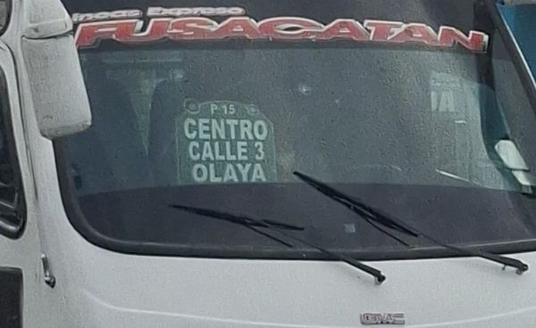
Tono apagado por el vidrio; el color real puede ser más claro.
LC-002 · CENTRO · GALERIA · TERMINALModelado
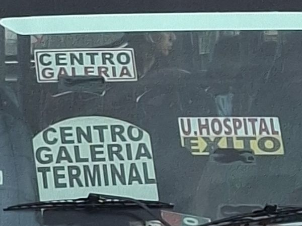
LC-003 · NARIÑO PEKIN · STA. Mª DE LOS ANGELES · ALTOS DE PEKINModelado
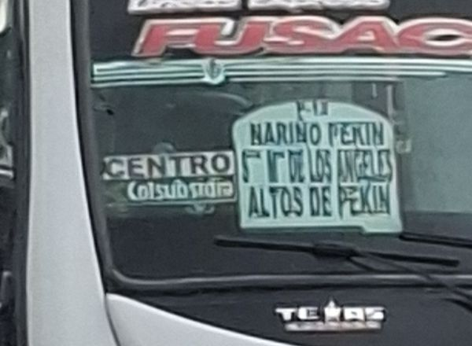
El código de arriba ('P-1?') no se lee. 'Colsubsidio' es logo; se reproduce como texto. También aparece en: 20260927_151105.jpg.
LC-004 · CANEY · GALERIA · CENTROModelado
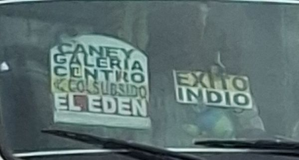
LC-005 · LA PALMA · Colsubsidio · SAN ANTONIOPor revisar
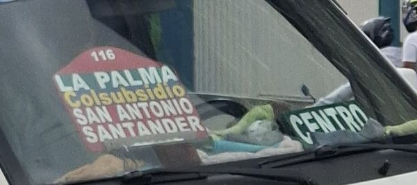
Fondo rojo con franja azul bajo 'Colsubsidio': los colores son una estimación. No encaja del todo con PLACA_ARCO. Colores de la placa roja inciertos; no encaja del todo en PLACA_ARCO.
LC-006 · HOSPITAL · AV. LAS PALMASModelado
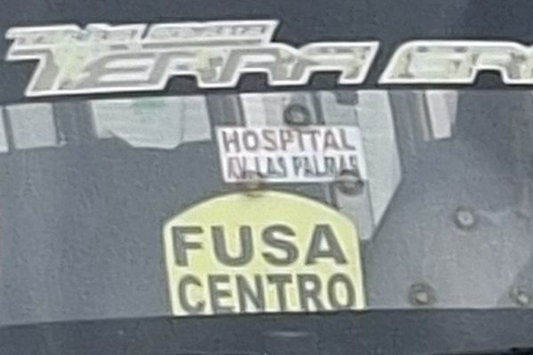
Buseta de Tierra Grata.
LC-007 · CENTRO · Colsubsidio · CALLE 3Modelado
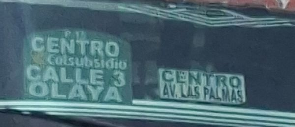
Código de arriba ilegible. Mismo destino que LC-001 pero con la línea 'Colsubsidio'.
LC-008 · Camino Real – La PampaModelado
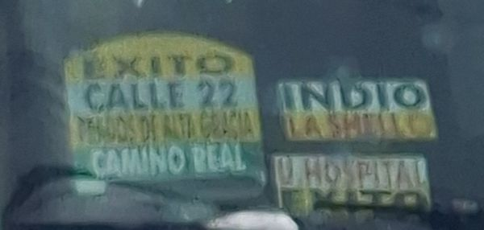
Mismas franjas y orden que la tabla SUBIENDO del gráfico oficial de 2020 (§5 del doc de investigación), pero con contorno en arco.
LC-009 · FUSA · CENTROModelado
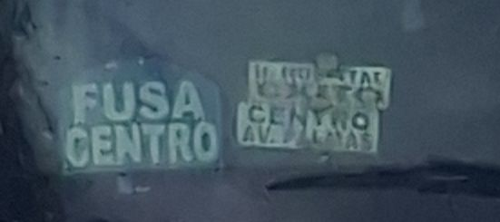
Hay otra placa 'U.HOSPITAL / EXITO' tapada por la anterior; no se modela.
LC-010 · EXITO · INDIO · SHELLPor revisar
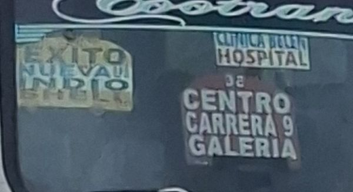
En la primera placa falta una línea entre EXITO e INDIO que no se lee ('NUEVA U…'). Una línea de la primera placa no se lee.
LC-011 · FUSAPor revisar
Solo se lee 'FUSA'; el resto de la placa lo tapa el limpiaparabrisas. Solo se lee 'FUSA'.
LC-012 · Chinauta – BoquerónModelado
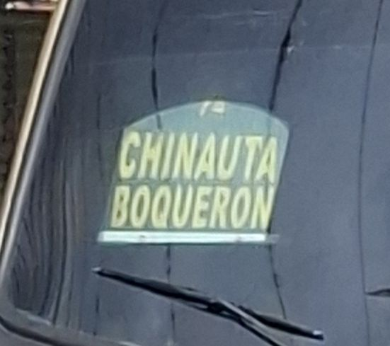
Nombre tomado literalmente del letrero. También aparece en: 20260927_151134.jpg.
LC-013 · Chinauta – EscuelaModelado
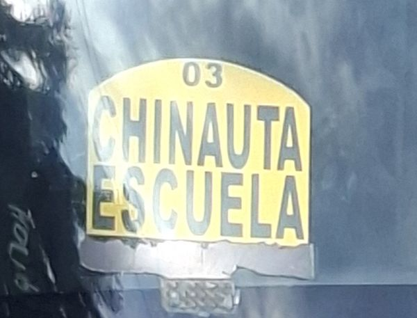
Nombre tomado literalmente del letrero. Buseta de Tierra Grata.
LC-014 · U.HOSPITAL · EXITOPor revisar
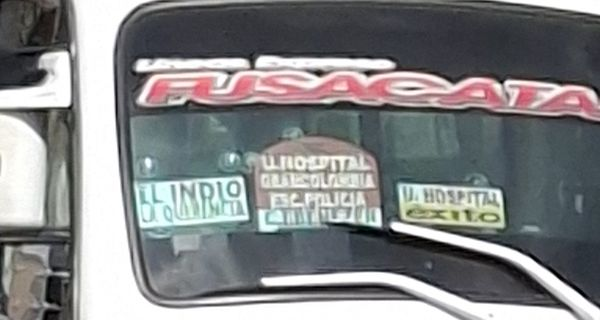
Hay una placa en arco roja entre las dos que no se lee (empieza por 'U.HOSPITAL'); la línea bajo 'EL INDIO' tampoco. Lejana; solo se leen 2 de las 3 placas.
LC-015 · Camino Real – La PampaModelado
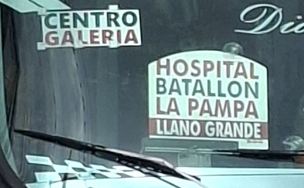
Mismo orden y mismos tonos que la tabla BAJANDO del gráfico oficial de 2020; contorno en arco.
LC-016 · CENTRO · CEMENTERIO · GAITANPor revisar
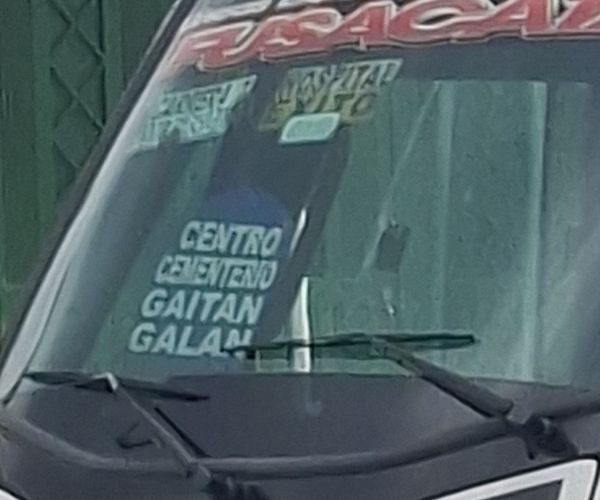
Foto tomada a través de matas y de lado. Hay una cuarta línea cortada ('GALAN…'). De lado y entre matas; cuarta línea cortada.
LC-017 · $2. 00 · HOSPITAL · INDIOModelado
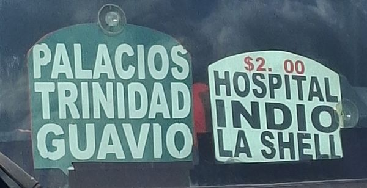
Buseta de Cootranspeover. La placa blanca trae pintada una tarifa que se lee '$2. 00'; la oficial de 2026 es $2.600, así que es una placa vieja.
LC-018 · Maíz AmarilloModelado
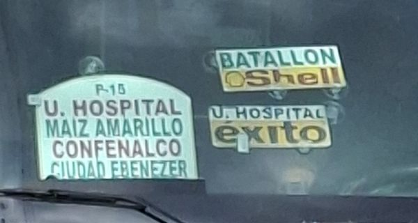
Coincide con la ficha §2 (Ciudad Ebenezer · Maíz Amarillo). En esta foto 'COMFENALCO' se lee 'CONFENALCO' por la resolución; se toma la grafía de la otra foto de la misma placa (20260927_151746). También aparece en: 20260927_151746.jpg.
LC-019 · CRA. 6 - CLL. 22 · HOSPITAL · COOVIPROFModelado
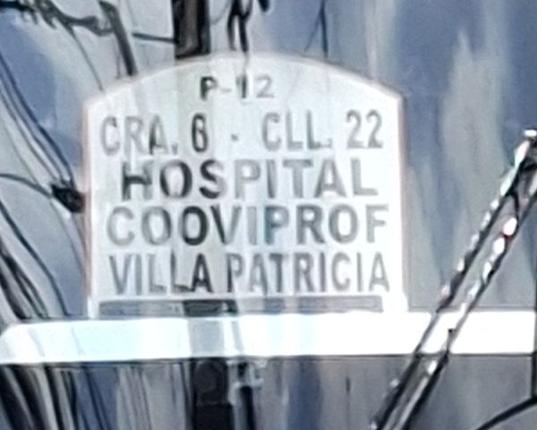
También aparece en: 20260927_151643.jpg.
LC-020 · CRA. 8 HOSPITAL · COOVIPROF · VILLA PATRICIAModelado
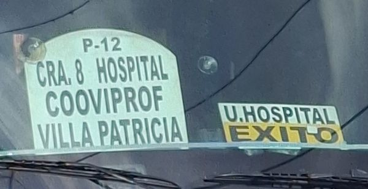
Mismo código P-12 que LC-019 pero la primera línea dice 'CRA. 8 HOSPITAL'.
LC-021 · Camino Real – La PampaModelado
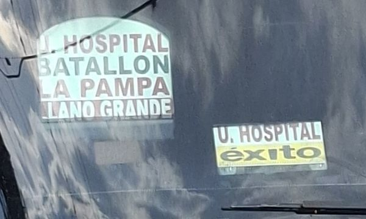
Igual que LC-015 pero la primera línea dice 'U. HOSPITAL'. Buseta de Tierra Grata.
LC-022 · U. HOSPITAL · BATALLON · LLANO LARGOModelado
LC-023 · CUJA · HORIZONTEPor revisar
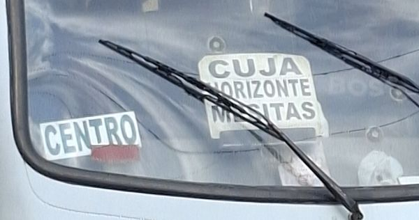
Hay una tercera línea tapada por el limpiaparabrisas ('MESITAS' o parecido). Tercera línea tapada por el limpiaparabrisas.
LC-024 · PROGRESO · SAN ANTONIOPor revisar
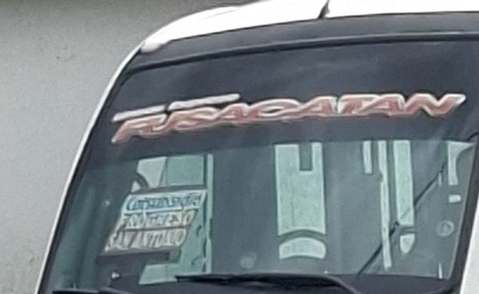
Arriba hay otra línea, probablemente el logo de Colsubsidio, que no se distingue. Buseta en la esquina; solo se leen 2 líneas. También aparece en: 20260927_151958.jpg.
LC-025 · Fusagasugá – ArbeláezModelado
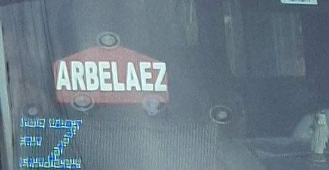
Nombre tomado literalmente del letrero. Furgoneta Mercedes de Cootransfusa.
LC-026 · HOSPITAL · LA SHELL · CUJAModelado
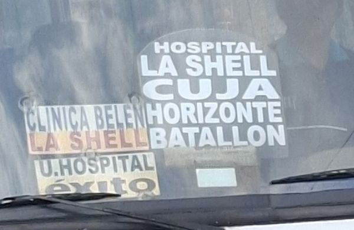
Buseta de Cootranspeover. La placa grande es translúcida: el fondo real es el vidrio.
LC-027 · CENTRO · Colsubsidio · CALLE 4Modelado
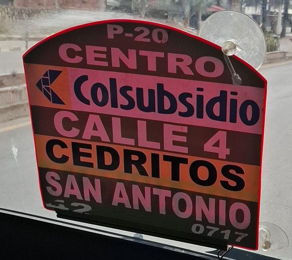
Foto tomada desde dentro de la buseta, la más nítida del lote. 'Colsubsidio' es logo; se reproduce como texto. El '0717' de abajo es el número interno del vehículo.
LC-028 · FUSA · CENTRO · CARRERA 9Modelado
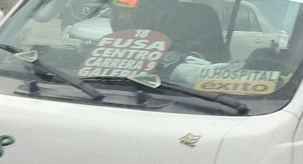
Foto desde dentro de otra buseta, con reflejos.
LC-029 · Llano Largo – La ClaritaModelado
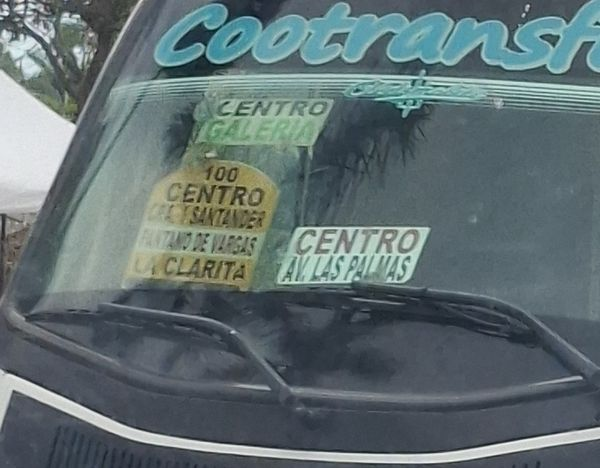
Mismo texto y código 100 que el ejemplo público de Tizumba (2022): el letrero sigue vigente en 2026. Al borde derecho se ve el reverso de la placa P-20 de 20260927_152349 (el letrero del que tomó la foto); no cuenta como placa de esta buseta.
Fotos que necesitan ojo humano
Ilegibles o con lectura parcial. Sirve más una foto frontal, de cerca y sin reflejo que cualquier ajuste aquí.
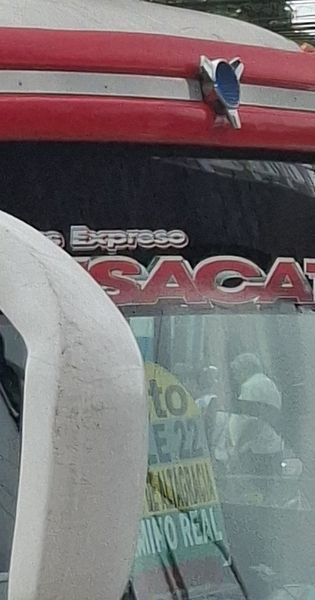 | 20260927_145557.jpgPor revisarBuseta de costado: el espejo tapa la placa; se alcanza a leer '…E 22' y '…MINO REAL', que apuntan a la tabla de Camino Real – La Pampa. No se modela. |
20260927_150110.jpgPor revisar → LC-005Colores de la placa roja inciertos; no encaja del todo en PLACA_ARCO. | |
| — | 20260927_150111.jpgIlegibleFurgoneta fotografiada de costado; no se ve ninguna placa en el parabrisas. |
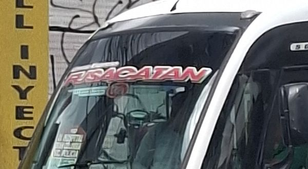 | 20260927_150607.jpgIlegibleBuseta en la esquina del cuadro; las placas miden pocos píxeles y no se leen. |
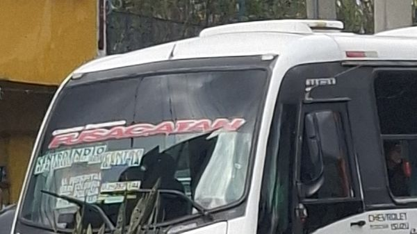 | 20260927_150619.jpgIlegibleBuseta a distancia, entre matas; solo se distingue que hay 3 o 4 placas, sin texto legible. |
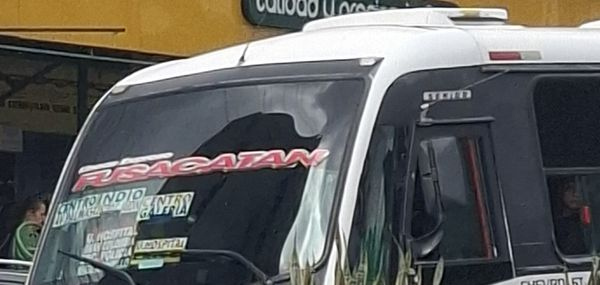 | 20260927_150620.jpgIlegibleMisma buseta que 20260927_150619, ángulo peor. |
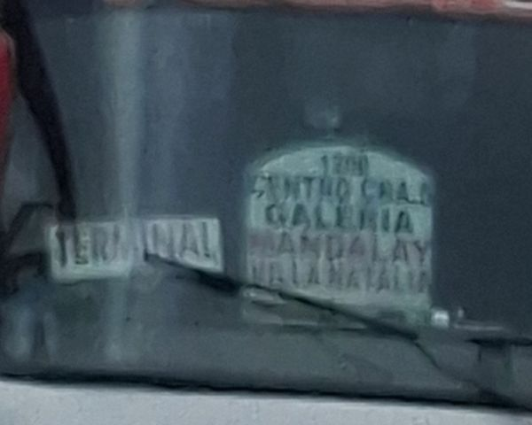 | 20260927_150730.jpgPor revisarPlaca oscura y lejana: se leen 'CENTRO CRA.', 'GALERIA' y 'VILLA NATALIA', pero faltan líneas y hay una placa 'TERMINAL'. No se completa a ojo. |
20260927_151012.jpgPor revisar → LC-010Una línea de la primera placa no se lee. | |
20260927_151056.jpgPor revisar → LC-011Solo se lee 'FUSA'. | |
20260927_151512.jpgPor revisar → LC-014Lejana; solo se leen 2 de las 3 placas. | |
20260927_151525.jpgPor revisar → LC-016De lado y entre matas; cuarta línea cortada. | |
20260927_151913.jpgPor revisar → LC-023Tercera línea tapada por el limpiaparabrisas. | |
20260927_151956.jpgPor revisar → LC-024Buseta en la esquina; solo se leen 2 líneas. | |
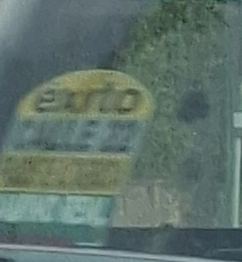 | 20260927_152531.jpgIlegibleMovida y a través de la ventanilla de otra buseta. Parece una placa en arco con franjas amarilla/azul/verde, como la de Camino Real – La Pampa, pero solo se lee 'EXITO'. |
Réplicas con evidencia
Llano Largo – La Clarita
Colores muestreados de la foto. La fuente original (palo seca negra de rotulista) no se identifica en la resolución disponible; Archivo Black y Archivo Narrow son las más parecidas.
Camino Real – La Pampa
Copiado del gráfico oficial (serif tipo Times; Tinos tiene sus mismas métricas). No es foto del letrero físico.
Reconstruidas (sin foto del letrero)
Armadas con las plantillas y los puntos de cada ficha de ruta. Son aproximaciones: confirmar en campo antes de usarlas como definitivas.
Maíz Amarillo
Pablo Bello – Cedritos
Villa Leny – SENA Quebrajacho
Fusagasugá – Chinauta
Fusagasugá – Arbeláez
Fusagasugá – Pasca
Fusacatán "FUSA CENTRO"
Plantillas para cargar cualquier ruta
PLACA_ARCO
PLACA_RECT
TABLA_FRANJAS
Paleta y tipografías
| Uso | Fondo | Texto | Fuente sustituta |
|---|---|---|---|
| Placa en arco | #F7A93B | #4A1D06 | Archivo Black / Archivo Narrow 700 |
| Línea destacada | #FBE3DC | #7A1414 | Archivo Narrow 700 |
| Placa amarilla | #F3E31B | #111111 | Archivo Black |
| Placa blanca | #FFFFFF | #111111 | Archivo Black |
| Franja amarilla | #FFFF00 | #000000 | Tinos 700 |
| Franja gris | #C0C0C0 | #000000 | Tinos 700 |
| Franja verde | #008000 | #FFFFFF | Tinos 400 |
| Franja roja | #FF0000 | #FFFFFF | Tinos 700 |
| Texto rojo sobre blanco | #FFFFFF | #E00000 | Tinos 700 |